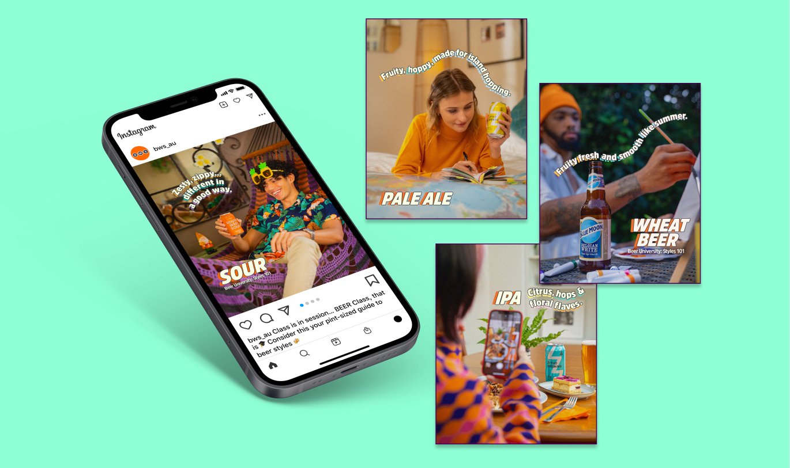
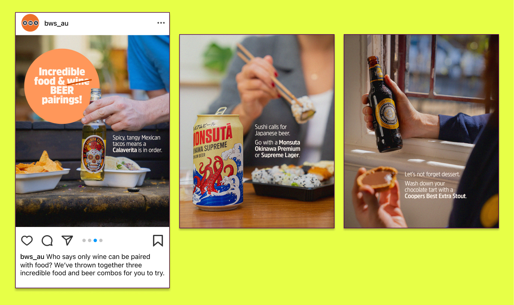
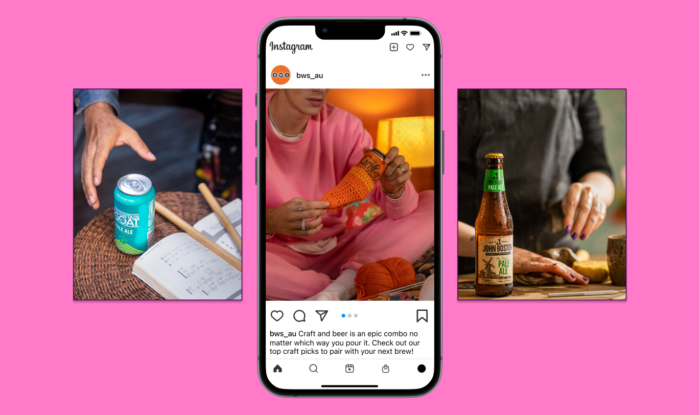

<!-- Modal 10-->
<div class="modal fade modal-xl" id="exampleModal8" tabindex="-1" aria-labelledby="exampleModalLabel" aria-hidden="true">
  <div class="modal-dialog">
    <div class="modal-content">
      <div class="modal-header">
        <button type="button" class="btn-close" data-bs-dismiss="modal" aria-label="Close"></button>
      </div>
      <div class="modal-body">

<div class=" row justify-content-center align-items-center" style="margin-bottom: 40px; margin-top: 40px;">
  <h2 class="text-center col-12 m-0 px-3 py-2" style="font-family:PPMonument; font-size: 48px; ">BWS</h2>
  <p class="text-center text-dark fs-6 fw-light font-family-Helvetica Neue col-12 m-0 px-3 py-2 pb-4">Social Media Content</p>
<br> <p style="padding-left: 10%; padding-right: 10%;">
  BWS approached us to help shoot some social content highlighting Beer and Wine products. We worked with the BWS team to produce content highlighting food pairings, social occasions and product styles. It was important to get the style of this photography just right to ensure it fit the BWS brand while resonating with a 25-35Y/O audience. Styling was kept minimal, splashes of brand colour were applied through props and wardrobe, and scenarios were chosen to be attainable and relatable to the audience.
  </p>
  
  
  


      </div>
      <div class="modal-footer">

      </div>
    </div>
  </div>
</div>
